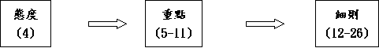

|
持
得
豐
盛
之
關
鍵 |
|||||
|
勇敢踏上 |
謹守遵行 |
選擇上好 |
追念失敗 |
得蒙賜福 |
效法神僕 |
|
１－３ |
４－２６ |
２７－３０ |
３１－３２ |
３３ |
３４ |
二.要謹守遵行神的話(4-26)

1.謹守遵行的態度(4)
A.感到重要(4:1-8)
a.得存活
(1)現今遵行的重要
「以色列人哪，現在我所教訓你們的律例典章，你們要聽從遵行，好叫你們存活，得以進入耶和華你們列祖之神所賜給你們的地，承受為業。」4:1
(2)過去得活的印證
「耶和華因巴力毘(音皮)珥的事所行的，你們親眼看見了。凡隨從巴力毗珥的人，耶和華你們的神都從你們中間除滅了。惟有你們專靠耶和華你們神的人，今日全都存活。」4:3-4
「以色列人住在什亭，百姓與摩押女子行起淫亂。因為這女子叫百姓來，一同給他們的神獻祭，百姓就吃他們的祭物，跪拜他們的神。以色列人與巴力毗珥連合，耶和華的怒氣就向以色列人發作。耶和華吩咐摩西說：「將百姓中所有的族長在我面前對著日頭懸掛，使我向以色列人所發的怒氣可以消了。」於是摩西吩咐以色列的審判官說：「凡屬你們的人，有與巴力毗珥連合的，你們各人要把他們殺了。」民25:1-5
〜過往一部份以色列人曾與摩押女子行淫，被引誘敬拜巴力毘珥偶像，不遵行神的話，結果被除滅，但部份選民沒有跟從，遵守律例，至今仍活著，更印證遵行神話得存活的應許。
b.得超越
「所以你們要謹守遵行；這就是你們在萬民眼前的智慧、聰明。他們聽見這一切律例，必說：『這大國的人真是有智慧，有聰明！』」4:6
B.殷懃保守(4:9-40)
「你只要謹慎，慇勤保守你的心靈，免得忘記你親眼所看見的事，又免得你一生、這事離開你的心；總要傳給你的子子孫孫。」4:9
〜如何能守神話呢？秘訣要慇懃保守心靈，不要忘記：
a.勿忘記在何烈山上的約
「你在何烈山站在耶和華你神面前的那日，耶和華對我說：『你為我招聚百姓，我要叫他們聽見我的話，使他們存活在世的日子，可以學習敬畏我，又可以教訓兒女這樣行。』」4:10
〜「何烈山」即「西乃山」，律法的精要在於西乃之約，此約是源頭，選民不能忘記，要謹守，子子孫孫也要傳遞。
b.勿忘記在何烈山上所見
「所以，你們要分外謹慎；因為耶和華在何烈山、從火中對你們說話的那日，你們沒有看見什麼形像。惟恐你們敗壞自己，雕刻偶像，彷彿什麼男像女像。」4:15-16
〜他們在何烈山上沒看見甚麼形像，見不到神的真貌，目的是怕他們用自己眼光，聯想雕刻偶像，敗壞自己。
〜他們應引此為提醒，當初神沒有顯示自己的形像，人也沒需要在日後為神造甚麼像及樣式。
c.勿忘記真神曾經的管教
「耶和華又因你們的緣故向我發怒，起誓必不容我過約但河，也不容我進入耶和華你神所賜你為業的那美地。我只得死在這地，不能過約但河；但你們必過去得那美地。你們要謹慎，免得忘記耶和華你們神與你們所立的約，為自己雕刻偶像，就是耶和華你神所禁止你做的偶像。」4:21-23
d.勿忘記悖逆後仍可回轉
「我今日呼天喚地向你們作見證，你們必在過約但河得為業的地上速速滅盡！你們不能在那地上長久，必盡行除滅。耶和華必使你們分散在萬民中；在他所領你們到的萬國裡，你們剩下的人數稀少。」4:26-27
「但你們在那裡必尋求耶和華你的神。你盡心盡性尋求他的時候，就必尋見。日後你遭遇一切患難的時候，你必歸回耶和華你的神，聽從他的話。耶和華你神原是有憐憫的神；他總不撇下你，不滅絕你，也不忘記他起誓與你列祖所立的約。」4:29-31
〜摩西預知他們會失敗，但寫下要他們記得仍可回轉，只要再尋求神，神必不忘記所立的約。
e.勿忘記除神外再無別神
「所以，今日你要知道，也要記在心上，天上地下惟有耶和華他是神，除他以外，再無別神。」4:39
(1)選民的超越
「你且考察在你以前的世代，自神造人在世以來，從天這邊到天那邊，曾有何民聽見神在火中說話的聲音，像你聽見還能存活呢？這樣的大事何曾有、何曾聽見呢？」4:32-33
(2)真神的超然
「神何曾從別的國中將一國的人民領出來，用試驗、神蹟、奇事、爭戰、大能的手，和伸出來的膀臂，並大可畏的事，像耶和華你們的神在埃及，在你們眼前為你們所行的一切事呢？這是顯給你看，要使你知道，惟有耶和華他是神，除他以外，再無別神。」4:34-35
(3)揀選的大愛
「因他愛你的列祖，所以揀選他們的後裔，用大能親自領你出了埃及。」4:37
C.即時執行(4:41-49)
「耶和華曉諭摩西說：「你吩咐以色列人說：你們過約但河，進了迦南地，就要分出幾座城，為你們作逃城，使誤殺人的可以逃到那裡。」民35:9-11
「在約但河東要分出三座城，在迦南地也要分出三座城，都作逃城。」民35:14
「那時，摩西在約但河東，向日出之地，分定三座城，使那素無仇恨、無心殺了人的，可以逃到這三城之中的一座城，就得存活。」申4:41-42
〜「那時」→他們已得了約但河東之地，在未入迦南前，可作甚麼？就是即時遵行在民35神的吩咐，在約但河東，設立逃城。
〜西乃的約重點是以神為獨一的神，愛祂，並愛人，前面己題及不可有偶像，而愛人的高峰(在舊約)，乃是饒恕無心殺人的人，所以逃城的設立，彰顯律法愛人的精意。
2.謹慎遵行的重點(5-11)
A.內容的重點：西乃之約(5:1-22)
「耶和華我們的神在何烈山與我們立約。這約不是與我們列祖立的，乃是與我們今日在這裡存活之人立的。耶和華在山上，從火中，面對面與你們說話，（那時我站在耶和華和你們中間，要將耶和華的話傳給你們；因為你們懼怕那火，沒有上山）說：「『我是耶和華你的神，曾將你從埃及地為奴之家領出來。」5:2-3
〜不是為過去列祖的，乃是與今日仍存活將入迦南百姓而立的
「內中有一個人是律法師，要試探耶穌，就問他說：「夫子，律法上的誡命，那一條是最大的呢？」耶穌對他說：「你要盡心、盡性、盡意愛主你的神。這是誡命中的第一，且是最大的。其次也相仿，就是要愛人如己。這兩條誡命是律法和先知一切道理的總綱。」太22:35-40
(1)愛神的誡命
(A)敬愛獨一的主宰
(a)獨一的主
「除了我以外，你不可有別的神。」5:7
(b)單事奉祂
「不可為自己雕刻偶像，也不可做什麼形像，彷彿上天、下地和地底下、水中的百物。不可跪拜那些像，也不可事奉他，因為我耶和華你的神是忌邪的神。恨我的，我必追討他的罪，自父及子，直到三、四代；愛我、守我誡命的，我必向他們發慈愛，直到千代。不可妄稱耶和華你神的名；因為妄稱耶和華名的，耶和華必不以他為無罪。」5:8-11
(c)尊神為聖
「不可妄稱耶和華你神的名；因為妄稱耶和華名的，耶和華必不以他為無罪。」5:11
「不可指著我的名起假誓，褻瀆你神的名。我是耶和華。」利19:12
〜地上國家的國旗尚且不可亂用或藐視，何況神偉大的名，更應尊重，不可亂用祂的名起誓或褻瀆祂。
(B)順從真神的吩咐
〜前面的誡命是不可，後2條是「神所吩咐」要行的，愛神的人，自然行神所吩咐
(a)要分別出來歸神
「當照耶和華你神所吩咐的守安息日為聖日。六日要勞碌做你一切的工，但第七日是向耶和華你神當守的安息日。這一日，你和你的兒女、僕婢、牛、驢、牲畜，並在你城裡寄居的客旅，無論何工都不可做，使你的僕婢可以和你一樣安息。你也要記念你在埃及地作過奴僕；耶和華你神用大能的手和伸出來的膀臂將你從那裡領出來。因此，耶和華你的神吩咐你守安息日。」5:12-15
〜安息日的意義是在第七日分別出來，成為聖日，不屬自已，在這日不作工，單記念神的創造，神的拯救，享受神的安舒，與人一同分享。
(b)敬重神所用的人
「當照耶和華你神所吩咐的孝敬父母，使你得福，並使你的日子在耶和華你神所賜你的地上得以長久。」5:16
「在上有權柄的，人人當順服他，因為沒有權柄不是出於神的。凡掌權的都是神所命的。」羅13:1
〜神給地上權柄管教兒女，作為兒女，要孝敬他們，像尊重神一樣，這樣神必賜福
(2)愛人的誡命
「凡事都不可虧欠人，惟有彼此相愛要常以為虧欠；因為愛人的，就完全了律法。像那不可姦淫，不可殺人，不可偷盜，不可貪婪，或有別的誡命，都包在愛人如己這一句話之內了。愛是不加害與人的，所以愛就完全了律法。」羅13:8-10
(A)不加害別人
(a)不可殺人
「不可殺人。」5:17
(b)不可姦淫
「不可姦淫。」5:18
(c)不陷害人
「不可作假見證陷害人。」5:20
(B)不虧欠別人
(a)不可偷盜
「不可偷盜。」5:19
(b)不可貪婪
「不可貪戀人的妻子；也不可貪圖人的房屋、田地、僕婢、牛、驢，並他一切所有的。」5:21
〜只要愛人如己，就能不加害別人，不虧欠別人，也完全了律法
〜十誡已包含愛神愛人的精要，人掌握，活用背後的總剛，就已足夠，不要別的話了。
「這些話是耶和華在山上，從火中、雲中、幽暗中，大聲曉諭你們全會眾的；此外並沒有添別的話。他就把這話寫在兩塊石版上，交給我了。」5:22
B.內心的重點：敬神愛神(5:23-11:32)
a.敬神愛神的呼籲(5:23-6:9)
(1)關乎敬神
(A)過往的欣賞
「那時，火焰燒山，你們聽見從黑暗中出來的聲音；你們支派中所有的首領和長老都來就近我，說：『看哪，耶和華我們神將他的榮光和他的大能顯給我們看，我們又聽見他的聲音從火中出來。今日我們得見神與人說話，人還存活。現在這大火將要燒滅我們，我們何必冒死呢？若再聽見耶和華我們神的聲音就必死亡。凡屬血氣的，曾有何人聽見永生神的聲音從火中出來，像我們聽見還能存活呢？求你近前去，聽耶和華我們神所要說的一切話，將他對你說的話都傳給我們，我們就聽從遵行。』」5:23-27
「惟願他們存這樣的心敬畏我，常遵守我的一切誡命，使他們和他們的子孫永遠得福。」5:29
〜過往在何烈山上，他們稍為看見神的可畏，懼怕祂，不敢真接見祂，這是神所欣賞的，惟願他們日後也存這樣的心敬畏祂，遵守祂的誡命。
(B)現今的吩咐
「這是耶和華你們神所吩咐教訓你們的誡命、律例、典章，使你們在所要過去得為業的地上遵行，好叫你和你子子孫孫一生敬畏耶和華你的神，謹守他的一切律例誡命，就是我所吩咐你的，使你的日子得以長久。」6:1-2
(2)關乎愛神
(A)愛的要求
「以色列啊，你要聽！耶和華我們神是獨一的主。你要盡心、盡性、盡力愛耶和華你的神。我今日所吩咐你的話都要記在心上。」6:4-6
〜強調獨一的主
〜強調盡心盡性盡力
(B)愛的行動
「我今日所吩咐你的話都要記在心上，也要殷勤教訓你的兒女。無論你坐在家裡，行在路上，躺下，起來，都要談論。也要繫在手上為記號，戴在額上為經文；又要寫在你房屋的門框上，並你的城門上。」6:6-9
(a)記在心中
(b)教導兒女
b.敬畏真神的表現(6:10-10:22)
〜如何在入至迦南地後，學習敬神愛神呢？應有甚麼表現？
「耶和華你的神領你進他向你列祖亞伯拉罕、以撒、雅各起誓應許給你的地。那裡有城邑，又大又美，非你所建造的。」6:10
(1)勿從別神
「你要敬畏耶和華你的神，事奉他，指著他的名起誓。不可隨從別神，就是你們四圍國民的神。」6:13-14
(2)不試探神
「你們不可試探耶和華你們的神，像你們在瑪撒那樣試探他。要留意遵守耶和華你們神所吩咐的誡命、法度、律例。」6:16-17
「所以與摩西爭鬧，說：「給我們水喝吧！」摩西對他們說：「你們為什麼與我爭鬧？為什麼試探耶和華呢？」」出 17:2
「他給那地方起名叫瑪撒（就是試探的意思），又叫米利巴（就是爭鬧的意思）；因以色列人爭鬧，又因他們試探耶和華，說：「耶和華是在我們中間不是？」」出 17:7
(3)教育子孫(也敬畏神)
「日後，你的兒子問你說：『耶和華我們神吩咐你們的這些法度、律例、典章是什麼意思呢？』你就告訴你的兒子說：『我們在埃及作過法老的奴僕；耶和華用大能的手將我們從埃及領出來。」6:20-21
「將我們從那裡領出來，要領我們進入他向我們列祖起誓應許之地，把這地賜給我們。耶和華又吩咐我們遵行這一切律例，要敬畏耶和華我們的神，使我們常得好處，蒙他保全我們的生命，像今日一樣。」6:23-24